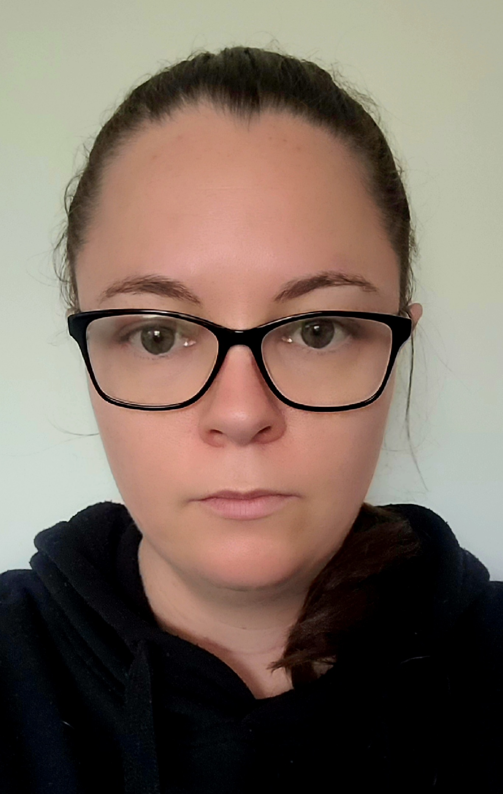

|
SGT Peta-Maree Bubear
Phronesis Collective Team Leader
Canberra ACT, Ngunnawal Country
Peta is a mother of two sons, four stepdaughters, two dogs and two rats, with a keen interest in dinosaurs and megafauna.
Peta has served in the Royal Australian Air Force for 15 years and is developing her underpinning knowledge and skills in IT and computing. Her interest in IT has culminated after years of hesitance and a renewed sense of appreciation.
Peta's employer is investigating how to best utilise artificial intelligence and machine learning in cyber security and the field of space.
Peta has commenced a Bachelor of IT through RMIT to stay ahead of her peers and remain relevant in the warfighting domain.